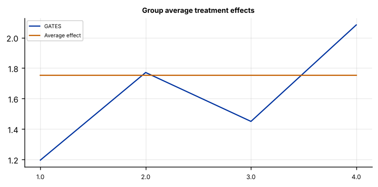

Run this model on your own data in Open Econometric Systems →
Step 1The question and the three outputs
Does the treatment effect vary, and who gains most? In a randomised experiment with treatment share \(p\), split the sample at random into an auxiliary half and a main half. In the auxiliary half fit a machine-learning model of the outcome separately for treated and control units. For each unit in the main half this gives a baseline prediction \(B(x)\) and a proxy of the effect \(S(x)=\hat m_1(x)-\hat m_0(x)\). Then, in the main half:
- BLP. Regress \(Y\) on \(1, B, S\) and \((D-p)\) and \((D-p)(S-\bar S)\) with weights \(1/(p(1-p))\). The coefficient \(\beta_1\) on \(D-p\) is the average effect, and \(\beta_2\) says whether the proxy tracks the true effect: \(\beta_2=0\) if it carries no information, \(\beta_2=1\) if it is perfect.
- GATES. Sort units into groups by quantiles of \(S\) and estimate the effect \(\gamma_k\) in each group. A real heterogeneity shows as \(\gamma_K>\gamma_1\).
- CLAN. Compare covariate means in the most and least affected groups: the characteristics that separate them.
Repeating over many random splits and taking medians removes the dependence on any one split; the p-value is twice the median p-value, which keeps the size.
Three conditions for reading the output
- The treatment must be randomised (or the propensity score known). The method does not correct for selection.
- A significant \(\beta_2\) is the test of heterogeneity. GATES and CLAN describe it. If \(\beta_2\) is not significant, the groups are not evidence of differences.
- Power is low in small samples. Half the sample is used for estimation, so a null result is weak evidence of homogeneity.
How to write it: the model
We ask whether the earnings effect of the National Supported Work job-training programme differs across participants. Assignment was random (185 of 445 participants were treated). Following Chernozhukov, Demirer, Duflo and Fernández-Val (2018), in each of 40 random half-splits we train random forests of 1978 earnings for the treated and the control separately on one half, using age, education, race, marital status, degree status and earnings in 1974 and 1975, and use their difference as a proxy of the individual effect in the other half. There we estimate the best linear predictor of the effect, the effects in four groups sorted by the proxy, and the covariate means of the most and least affected groups. We report medians over the splits and p-values equal to twice the median p-value.
Step 2Load the data
import numpy as np
import pandas as pd
import oes_engine as oes # pip install -e open-econometric-systems/oes-engine
data = open("nsw_mediation.csv").read()
df = pd.read_csv("nsw_mediation.csv")
covs = ["age", "educ", "black", "hisp", "married", "nodegree", "re74", "re75"]
print(len(df), "workers;", int(df.train.sum()), "treated;", round(df.train.mean(), 3), "treated share")
print(df.groupby("train")[covs].mean().round(2).T)
print("difference in mean earnings:", round(df.re78[df.train == 1].mean() - df.re78[df.train == 0].mean(), 3))445 workers; 185 treated; 0.416 treated share train 0 1 age 25.05 25.82 educ 10.09 10.35 black 0.83 0.84 hisp 0.11 0.06 married 0.15 0.19 nodegree 0.83 0.71 re74 2.11 2.10 re75 1.27 1.53 difference in mean earnings: 1.794
How to read it
The covariate means are close in the two arms (for example age 25.1 and 25.8, education 10.1 and 10.4), as random assignment implies. Mean earnings in 1978 are 1.79 thousand dollars higher in the trained group. The question is whether this average hides a spread: for some participants the programme may matter much more.
Step 3Run the heterogeneity analysis
spec = dict(y="re78", treat="train", x=covs, groups=4, splits=40, seed=0)
r = oes.run("hetero", data, spec)
oes.summary(r)
oes.show(r, "Best linear predictor")Observations: 445
Treated share: 0.4157
Average effect: 1.754
Heterogeneity loading: 0.1041
p-value of heterogeneity loading: 1.0
Group 4 minus group 1: 0.7955
p-value of the difference: 1.0
Best linear predictor of the effect of train on re78
Estimate Std. error 95% CI low 95% CI high Adjusted p-value
Coefficient
Average treatment effect (beta1) 1.7540 0.9672 -0.4140 3.9219 0.1267
Heterogeneity loading (beta2) 0.1041 0.3677 -0.7201 0.9283 1.0000
Note: Medians over 40 random splits of the data; the p-value is twice the median p-value (Chernozhukov et al. 2018). beta2 = 1 means the machine-learning proxy of the effect is perfect, and beta2 = 0 means it carries no information about heterogeneity.How to read it
The average effect is 1.75 thousand dollars (95% interval -0.41 to 3.92, adjusted p = 0.13). It is less precise than the simple difference in means because only half of the sample is used in each split and the regression carries the machine-learning proxy. The heterogeneity loading \(\beta_2\) is 0.10 with a standard error of 0.37 (adjusted p = 1.0): the forest-based proxy has no detectable relationship with the actual effect. A value of 1 would mean a perfect proxy, and the interval of -0.72 to 0.93 includes 0 but not 1, so the data are consistent with a poor proxy and rule out a perfect one.
Step 4Group effects
oes.show(r, "Sorted group")
oes.plot(r, "Group average", ncols=1, size=(6, 3))Sorted group average treatment effects (GATES)
Effect Std. error 95% CI low 95% CI high Adjusted p-value
Group
Group 1 (least affected) 1.1967 1.6105 -2.4130 4.8064 0.8162
Group 2 1.7713 1.6593 -1.9478 5.4905 0.5957
Group 3 1.4506 1.6450 -2.2366 5.1377 0.7575
Group 4 (most affected) 2.0834 1.8880 -2.1483 6.3152 0.4631
Group 4 minus group 1 0.7955 2.5917 -5.0135 6.6044 1.0000
Note: Groups are quantiles of the predicted effect, formed in the estimation half of each split; medians over 40 splits.
How to read it
The four group effects are 1.20, 1.77, 1.45 and 2.08, with standard errors of 1.6 to 1.9, so every group has a positive point estimate and none is separated from zero or from the others. The difference between the most and the least affected group is 0.80 (standard error 2.59, adjusted p = 1.0). The ordering is not monotone, and the two extreme groups are far from distinguishable. There is no evidence in this sample that the effect of the programme differs along the dimension that the forest finds.
Step 5Who is in the most affected group?
oes.show(r, "Classification analysis")Classification analysis (CLAN): covariate means in the most and least affected groups
Group 4 mean Group 1 mean Difference Std. error Adjusted p-value
Covariate
age 29.3727 22.5089 7.4015 1.1137 0.0000
educ 11.3273 9.5714 1.7482 0.2972 0.0000
nodegree 0.5545 0.8929 -0.3472 0.0786 0.0000
married 0.3091 0.0714 0.2200 0.0718 0.0045
re74 1.0366 4.2905 -3.2374 1.1103 0.0166
hisp 0.0273 0.1339 -0.0977 0.0518 0.0467
black 0.8818 0.7768 0.1141 0.0690 0.0484
re75 1.2356 1.8046 -0.6910 0.6617 0.1539
Note: Which covariates separate the people with the largest predicted effects from those with the smallest. Medians over splits; p-values are not adjusted for the number of covariates.How to read it
The classification shows what the forest uses, not an effect. Participants in the group with the highest predicted effect are older (29.4 against 22.5 years), more educated (11.3 against 9.6 years), more often married (31% against 7%), less often without a degree (55% against 89%) and had lower earnings in 1974 (1.0 against 4.3). The differences are large, and they describe the participants that the forest predicts will gain, but because the GATES are not different, the forest's predictions did not turn out to separate real gains. The CLAN results alone would be misleading: they would be a story about older, more educated participants, and the evidence for it is not there.
Step 6Robustness to the number of groups and the random splits
rows = []
for G in (2, 3, 4):
for seed in (0, 1, 2):
rr = oes.run("hetero", data, dict(spec, groups=G, seed=seed))
b = {x[0][:5]: x for x in rr["tables"][0]["rows"]}
s = {x["label"]: x["value"] for x in rr["summary"]}
rows.append([G, seed, float(b["Avera"][1]), float(b["Heter"][1]), float(b["Heter"][5]), s[f"Group {G} minus group 1"], s["p-value of the difference"]])
print(pd.DataFrame(rows, columns=["groups", "seed", "average", "beta2", "p(beta2)", "top minus bottom", "p"]).round(3).to_string(index=False)) groups seed average beta2 p(beta2) top minus bottom p
2 0 1.754 0.104 1.000 0.518 1.000
2 1 1.599 0.038 1.000 0.474 1.000
2 2 1.752 0.163 0.995 0.767 1.000
3 0 1.754 0.104 1.000 0.323 1.000
3 1 1.599 0.038 1.000 0.302 1.000
3 2 1.752 0.163 0.995 0.833 0.962
4 0 1.754 0.104 1.000 0.796 1.000
4 1 1.599 0.038 1.000 0.254 1.000
4 2 1.752 0.163 0.995 0.381 1.000How to read it
Across three seeds and two to four groups the heterogeneity loading is between 0.04 and 0.16 with adjusted p-values of 0.995 or more, the average effect is between 1.60 and 1.75, and the top-minus-bottom difference is between 0.25 and 0.83 and never significant (the smallest adjusted p-value is 0.96). Nothing in the conclusion depends on the number of groups or the random splits. The seeds change the average effect by up to 0.15, which is the sampling variation from using half the sample, so report the number of splits and the seed.
Step 7Write the results
How to write it: results
Job training raises earnings by an estimated 1.75 thousand dollars (95% confidence interval -0.41 to 3.92; the interval is wider than for the simple difference in means because inference is based on half-samples). We find no evidence that the effect varies with the observed characteristics. The coefficient on the machine-learning proxy of the effect is 0.10 (standard error 0.37, adjusted p-value 1.0), and the effect in the group predicted to gain most exceeds that in the group predicted to gain least by 0.80 (standard error 2.59, adjusted p = 1.0). The groups differ in age, education, marital status and earlier earnings, so the forest does find variation in who the participants are, but that variation is not related to the size of the effect. The sample of 445 gives low power: the 95% interval for the difference between the most and least affected groups runs from -5.0 to 6.6 thousand dollars, so large differences cannot be ruled out. The results are medians over 40 random splits (seed 0).
| Report | What | Where |
|---|---|---|
| Method | Splits, proxy, BLP, GATES, CLAN | Step 1 |
| Data | Randomisation, balance, average effect | Step 2 |
| BLP | Average effect and heterogeneity loading | Step 3 |
| GATES | Effects by predicted-effect group | Step 4 |
| CLAN | Who is in the extreme groups | Step 5 |
| Robustness | Groups and seeds | Step 6 |
References. Chernozhukov, V., Demirer, M., Duflo, E. and Fernández-Val, I. (2018), "Generic Machine Learning Inference on Heterogeneous Treatment Effects in Randomized Experiments," NBER Working Paper 24678. Athey, S. and Imbens, G. (2016), "Recursive Partitioning for Heterogeneous Causal Effects," Proceedings of the National Academy of Sciences 113. Wager, S. and Athey, S. (2018), "Estimation and Inference of Heterogeneous Treatment Effects Using Random Forests," Journal of the American Statistical Association 113. Künzel, S., Sekhon, J., Bickel, P. and Yu, B. (2019), "Metalearners for Estimating Heterogeneous Treatment Effects Using Machine Learning," Proceedings of the National Academy of Sciences 116. LaLonde, R. (1986), "Evaluating the Econometric Evaluations of Training Programs with Experimental Data," American Economic Review 76.